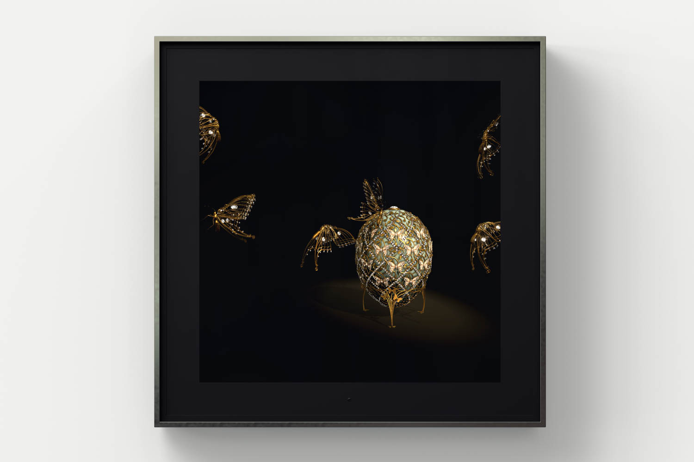

Projects & Experience
Junior Unity Developer - Dominic Harris Studios. // (Jan. 2022 – Present)
Junior Unity Developer at "Dominic Harris Studios" working on interactive based visual and backend artworks and pipeline.
● Worked on implementing a WebGL/Mobile based unity interactive artwork application on the collaborative
Metamorphosis Unicus project.
● R&D on Physics based cloth simulation on unity and unreal engine based projects
● Creating, maintaining, and improving pipelines and workflows in collaboration with the project lead.
● R&D using artificial intelligence to develop a pipline to create unique procedurally generated graphics for Physical and
canvas based artwork.
● Creating proof of concept tools for quickly executing tests.
● Working with the wider team to create full spec production workflows and tools..
● Collaborating with developers, 3D artists and animators to execute innovative and beautiful Artworks.
● Designing and implementing system designs with unique technical problems not common in the real-time industry
● Building and help develop UE4/UE5 procedural artwork using blueprints and the Niagara system.


"Metamorphosis Unseen"(Nvidia Jetson TX2)
Metamorphosis Unseen is practically using the same backend system as the larger Unseen format however displaying on the Nvidia Jetson TX2 platform with some adjustments to ensure stable performance on the weaker platform.
• The use of Unreals' Vulkan rendering pipeline to ensure more control over GPU and lower level CPU usage for the Jetson TX2.
• Ensured early R&D for the Jetson TX2 platform to assess whether or not haivng the same backend and base system would be able to withstand a stable framerate
More information can be found here

"Essence Of Time"
Essence of time was an older artwork in which needed additional features implemented for the up-coming ambitious "feeding Conciousness" exhibition
Work consisted of converting and combining 3 different maps into a single persistant level which would hold references to all exisitng maps and the ability to swipe through onto the next scene

"Limitless TOB"
A live data visualisation of the ever-changing financial landscape inspired by the story and form of the tower of babel.
•Spent time during early project life cycle on R&D with UE5 niagara system to build the project base from scratch.
•Early project concepts included facades from around the world to form the tower of babel, Heavily pushed and R&D AI image generation techniques such as Stable Diffusion and Mid-journey.
•Lead development and created an efficient pipeline to generate over 30,000 procedurally AI generated facades from around the world creating breathtaking facades.
•All 30,000 images had to be passed through multiple image processing librarys such as OpenCV/Scikit/Scipy/Pillow/Numpy/SimpleCV to further handcraft specific sets of facades to create early initial prototypes of "Limitless"
The following information about the finished artwork can be found "here"


Technical Artist Intern - Fireslug Studios. // (May. 2021 – December 2021)
Technical Artist at FireSlug studios which is a start-up game company based in London,UK. working on the new
IP "Ashborn" which is a 3D RPG dungeon crawler with team swap mechanics. Since joining the team,
I have been apart of building the combat beta release and have contributed to weekly updates/bug fixes.
● Development Lighting overhaul – Created a lighting system to set the mood to the game and added particle
effects to interactable objects.
● Fixing shading bugs on emissions and shaders to fit new lighting system.
● Collaborating with Artists, creative directors, and technical engineers through a handful of meetings per week
to ensure workload is being handled correctly for promotional launch.
● C# scripting for main menu navigation, gameplay, development, and animation sequences.
● Terrain bug fixes
● Worked on the initial combat build for beta release
● Implementation of a main menu credits page with UI design and creation
● Controller input Implementation for Title screen
● Health UI system overhaul

Project Ashborn - (May. 2021 – December 2021)
•Led the development of lighting systems and particle effects, significantly enhancing game atmosphere and visual quality.
• Fixed shading bugs on character emissions, ensuring high-quality rendering.
• Collaborated with artists, creative directors, and technical engineers to ensure efficient project execution.
• Utilized advanced C# scripting for main menu navigation, gameplay mechanics, and animation sequences.
• Optimized UI and post-processing stack to improve overall performance and user experience.
• Managed combat beta releases, implementing regular fixes and visual updates to ensure polished gameplay.
• Led the overhaul of the health system UI to match specifications and concept designs, showcasing UI design and implementation skills.
Together We Survive - (Retro First person Zombie Survival)


Together We Survive - (Retro First person Zombie Survival)
Together We Survive is a retro first person zombie shooter that was developed in a two person team within a 3 month period for a masters game development module.
Roles consisted of:
● Visual art direction - (PSX style graphics, Lighting & post processing, UI implementation, particle system - VFX)
● implementing core gameplay mechanics
● Animation of weapon handling (Shooting, reload, pull-out animations)
● 3D modelling of all weapons & attachments (Pistol, Shotgun, Rifle, Baseball Bat, laser sight, flashlight)
● Optimisations - (occlusion culling, GPU instancing, downgrading texture sizes, LOD groups, static batching)
● Audio design and implementation
Plans to release Together We Survive onto Itch.io in the upcoming weeks.

Actions Have Consequences (2D Platformer)

Actions have consequences - Unity
Actions have consequences is a published 2D platformer solo developed for my MA game development module in which was assigned to create a game for a Game Jam within 2 weeks
Since the release (April 2021) onto Itch.io which can be found here, it has amassed over 1400+ downloads which lead me to make plans of releasing regular updates to support the player-base & demand.

Manuki Motu


Manuki Motu - Unity
"Manuki Motu" is a 3D first person exploration puzzle game based on the accessibility and a challenge set within the group to create a game with no UI. theme set for the falmouth MA masters co-hort. Development was limited to 12 weeks of working within a remote group.
Planning to release "Manuki Motu" in a handful of weeks with full accessbility support.
Forgotten Memories

Forgotten Memories - Unity
Forgotten Memories is a work in progress, however it is a 3D adventure/exploration - narrative game that is developed and designed from scratch in Unity Game engine. The whole premise of the narrative is trying to regain aspects of memory to help you navigate your way through intricate puzzles after suffering a life changing car crash.


Urban Wards


Urban Wards - Serious Hazard Perception Application
Urban Wards is a 3D serious hazard perception game developed for my University final year project. The game consists of 3 levels ranging from day time to different urban environments.
The video game was developed with the target audience in mind which is primarily for Older adults. No prior knowledge of Unity or C# before undertaking project including the writing of the dissertation which all was completed and played-through in 6 months.
Project was awarded 90+ (A+) and was recognised as an academic success with potential ability to have it published at an international level.